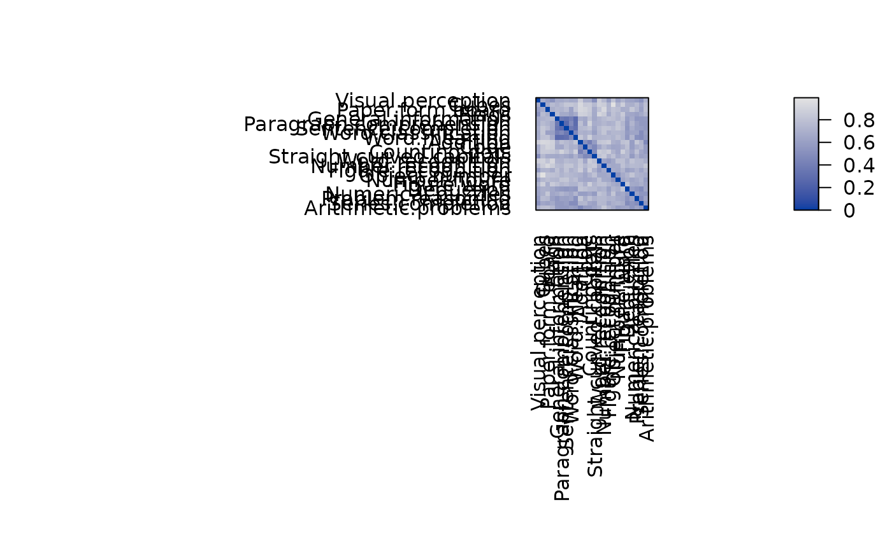
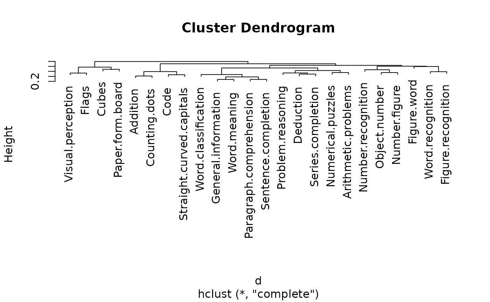
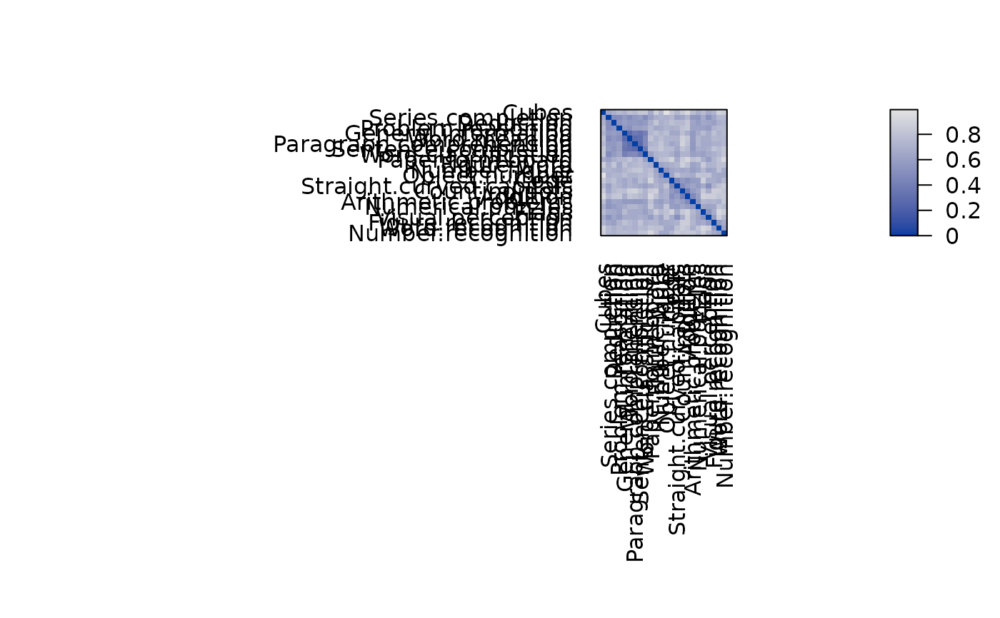

A data set collected by Holzinger and Swineford (1939) which consists of the results of 24 psychological tests given to 145 seventh and eighth grade students in a Chicago suburb. This data set contains the correlation matrix for the 24 test results. The data set was also used as an example for visualization of cluster analysis by Ling (1973).
References
Holzinger, K. L., Swineford, F. (1939): A study in factor analysis: The stability of a bi-factor solution. Supplementary Educational Monograph, No. 48. Chicago: University of Chicago Press.
Ling, R. L. (1973): A computer generated aid for cluster analysis. Communications of the ACM, 16(6), pp. 355–361.
See also
Other data:
Chameleon,
Irish,
Munsingen,
SupremeCourt,
Townships,
Wood,
Zoo,
create_lines_data(),
is.robinson()
Examples
data("Psych24")
## create a dist object and also get rid of the one negative entry in the
## correlation matrix
d <- as.dist(1 - abs(Psych24))
pimage(d)

## do hclust as in Ling (1973)
hc <- hclust(d, method = "complete")
plot(hc)

pimage(d, hc)
## use seriation
order <- seriate(d, method = "tsp")
#order <- seriate(d, method = "tsp", control = list(method = "concorde"))
pimage(d, order)
